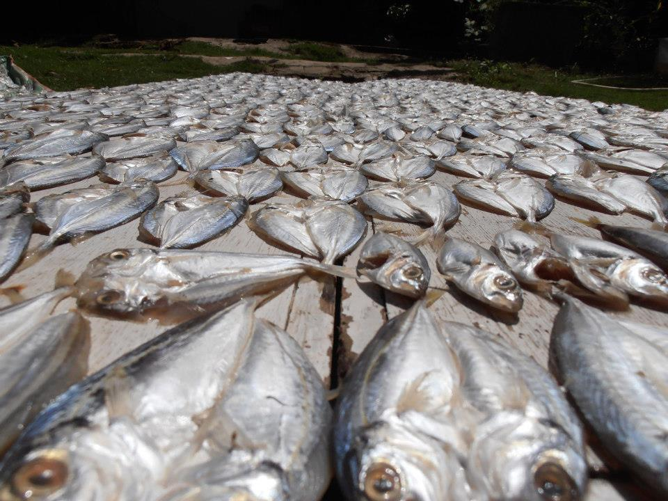
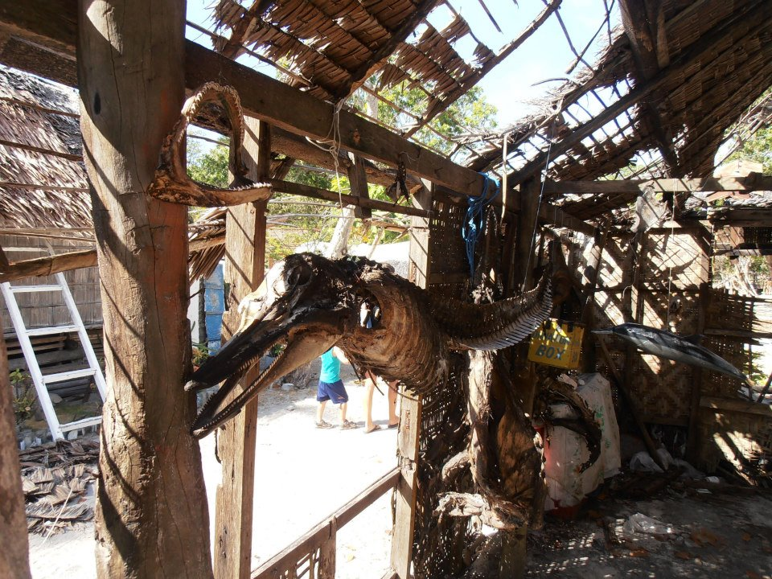

onSnap.js
Makes you snap!
Created by Franz Enzenhofer / @enzenhofer
Find this presentation at http://miniqr.com/onsnap.r
Lets start with a use case
Basically
You
can make

Awesome
Presenations
More Awesome
in a Snappy Way
But enough
Of the nice pictures.
How to use it!
<script src="onsnap.js"></script>
<script>
document.addEventListener("snap", function(){...});
</script>
How does it work?
- getUserMedia
- audioContext
- analyser node
- requestAnimationFrame
- unbelieveable sophisticated audio analysis algorithm
- CustomEvent
The Code
navigator.webkitGetUserMedia( {audio:true}, gotStream )
Fetching the Audio
gotStream = (stream) ->
context = new webkitAudioContext()
analyser = context.createAnalyser()
source = context.createMediaStreamSource( stream )
source.connect(analyser);
watchLoop(analyser)
requestAnimationFrame Loop
watchLoop = (analyser) ->
loop_id = window.webkitRequestAnimationFrame((()->watchLoop(analyser)))
freqByteData = new Uint8Array(analyser.frequencyBinCount)
#idiotic sideeffect method
analyser.getByteFrequencyData(freqByteData)
if listen
lookForSnap(freqByteData)
Analysing the Audio
lookForSnap = (freqData) ->
fsum = sum(freqData)
if (fsum > 50000)
throwSnapEvent()
listen = false
window.setTimeout((()->listen=true), 1000)
Creat and Throw the Snap Event
throwSnapEvent = () ->
event = new CustomEvent("snap", {
bubbles: true,
cancelable: false
})
window.document.body.dispatchEvent(event)
Thx
fe@f19n.com

Fork
on
Github
https://github.com/franzenzenhofer/onsnap.js
oh yeah, written litcoffee-style (literate programming + coffeescript)
Find this presentation at http://miniqr.com/onsnap.r